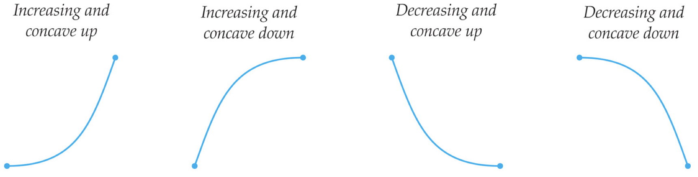

Make sure you know the precise definition of each of the terms in bold above and how to determine them from the formula for a function without relying on a graph or calculator (besides help with basic arithmetic).
Section 9.5 Curve Sketching Revisited
Subsection 9.5.1 Learning Goals
-
Revisit curve sketching and the full list of features that can be determined analytically, using algebra, limits, and derivatives.
-
Identify key information about four different functions.
-
Practice sketching the graph of a function from a full curve-sketch analysis.
Subsection 9.5.2 Recap of Curve Sketch Analyses
Congratulations! You have learned all of the differential calculus content of a standard Calculus 1 course! In order to bring together all of this knowledge, we revisit the idea of sketching the graph of a function by hand, with minimal (if any) help from computational devices. We focus particularly on sketching functions that involve the transcendental functions covered this semester: exponential, logarithmic, and trigonometric functions, as well as a particularly interesting algebraic function.
Recall that every graph is made up of pieces that are either linear or one of the four following curves, which we can use to "connect the dots" between critical points, asymptotes, or other discontinuities.

Below is the summary of the steps involved in a complete sketch of a function \(f(x)\text{,}\) initially provided in Section 5.7.6.
-
Find the domain of \(f\text{.}\)
-
Determine the \(\mathbf{y}\)-intercept, meaning the point \((0,f(0))\text{,}\) if \(f(0)\) is defined.
-
Determine any \(\mathbf{x}\)-intercepts that we can find easily (via factoring; many times this is not possible without more advanced methods). If we are able to find the \(x\)-intercepts, determine the intervals on which \(f\) is positive or negative. Record this information on a sign chart for \(f\text{.}\)
-
Check for any even or odd symmetry, specifically whether \(f(-x)=f(x)\) (even) or \(f(-x) = -f(x)\) (odd).
-
For any points where the function is discontinuous, determine the behavior of the function, meaning the limits as \(x\to c\) for any value \(x=c\) not in the domain of the function. Make note of any holes or vertical asymptotes.
-
Determine the "end behavior" of the graph, meaning the limits as \(x\to\pm\infty\text{.}\) Make note of any left and/or right horizontal asymptotes.
-
Compute \(f'\) and determine the points where \(f'\) is zero or does not exist. Each of these points that is in the domain of \(f\) is a critical point of \(f\) and therefore a possible local extremum of \(f\text{.}\)
-
Determine the intervals on which \(f'\) is positive or negative. These are the same as the intervals on which \(f\) is increasing or decreasing, respectively. Record this information on a sign chart for \(f'\text{.}\)
-
Determine whether \(f\) has a local minimum, local maximum, or neither at each critical point.
-
Compute \(f''\) and determine the points where \(f''\) is zero or does not exist. Each of these points that is in the domain of \(f\) is a critical point of \(f'\) and therefore a possible inflection point of \(f\text{.}\)
-
Determine the intervals on which \(f''\) is positive or negative. These are the same as the intervals on which \(f\) is concave up or concave down, respectively. Record this information on a sign chart for \(f''\text{.}\)
-
Plot any intercepts and holes.
-
Draw dashed vertical or horizontal lines for any vertical or horizontal asymptotes of \(f\text{.}\)
-
At each local extremum or inflection point \(x=c\text{,}\) determine the value of \(y=f(c)\text{.}\) Plot these points \((c,f(c))\text{.}\)
-
Between the features already plotted (points and asymptotes), use the sign charts for \(f'\) and \(f''\) to determine which of the four types of curve shapes the graph will have.
-
Graph the function by connecting the features with curves.
Checkpoint 9.5.1.
Subsection 9.5.3 Full Curve Sketching Examples
Example 9.5.2.
Below, we give a full curve sketch of \(f(x) = \dfrac{\ln x}{x}\text{.}\)
Domain: We must have \(x\neq 0\) from the denominator and \(x>0\) from the logarithm, hence the domain is \((0,\infty)\text{.}\)
\(\mathbf{y}\)-Intercept: Since \(x=0\) is not in the domain of \(f\text{,}\) there is no \(y\)-intercept.
\(\mathbf{x}\)-Intercepts: \(f(x) = 0\) where \(\ln x=0\text{,}\) so where \(x=e^0=1\text{.}\) Thus there is an \(x\)-intercept at the point \((1,0)\text{.}\)
\(\mathbf{f}\) Positive and Negative: We test whether \(f\) is positive or negative on each interval of its domain between roots:
| Interval | \((0,1)\) | \((1,\infty)\) |
| \(f\) is | \(-\) | \(+\) |
Thus the graph of \(f\) is below the \(x\)-axis for \(0\lt x\lt 1\) and above the \(x\)-axis for \(x>1\text{.}\)
Even/odd Symmetry: \(f(x) = \dfrac{\ln x}{x}\) is neither even nor odd. As we observed, \(f(x)\) is defined for \(x>0\) and so we cannot even evaluate \(f(-x)\text{,}\) since \(-x\lt 0\) is not in the domain of the function.
Vertical Asymptotes: \(f\) has a potential vertical asymptote at \(x=0\text{.}\) Since \(f\) is only defined for \(x>0\text{,}\) we take only the right limit at \(0\text{:}\)
\begin{equation*}
\ds\lim_{x\to 0+}\dfrac{\ln x}{x} = \dfrac{-\infty}{0^+} = -\infty
\end{equation*}
Thus there is a vertical asymptote to the right of \(x=0\) that goes to \(-\infty\text{.}\) Note that this matches the information from testing where \(f\) is positive and negative.
Horizontal Asymptotes: Since \(f\) is defined only for \(x>0\text{,}\) we need only check the behavior of \(f(x)\) as \(x\to\infty\text{.}\)
\begin{equation*}
\begin{aligned}\lim_{x\to\infty}\dfrac{\ln x}{x} \amp = \frac{\infty}{\infty}\amp \leftarrow \text{ indeterminate form } \frac{\infty}{\infty}\\ \amp \stackrel[L'H]{}= \lim_{x\to\infty} \frac{1/x}{1}\amp \leftarrow \text{ apply L'H\^opital's rule } \\ \amp = \lim_{x\to\infty}\frac{1}{x} = 0 \amp \leftarrow \text{ simplify and evaluate } \end{aligned}
\end{equation*}
Thus \(f\) has a right horizontal asymptote to \(y=0\text{.}\) Since \(f\) is positive for \(x>1\text{,}\) we know the function must approach \(y=0\) from above.
Critical Points: We calculate \(f'(x)\) using the quotient rule, then simplify and determine where it is 0 and undefined.
\begin{equation*}
f'(x) = \frac{x(1/x)-\ln x(1)}{x^2} = \frac{1-\ln x}{x^2}
\end{equation*}
\(f'(x) = 0\) when \(1-\ln x=0\text{:}\)
\begin{equation*}
\begin{aligned}1-\ln x \amp =0\\ 1 \amp = \ln x\\ e \amp = x \end{aligned}
\end{equation*}
and \(f'(x)\) DNE when \(x=0\text{,}\) which is not in the domain and so is not a critical point. Thus the only critical point of \(f(x)\) is \(x=e\text{.}\)
\(\mathbf{f}\) Increasing and Decreasing: We test whether \(f\) is increasing or decreasing on each interval of its domain between critical points by determining the sign of \(f'(x)\text{:}\)
| Interval | \((0,e)\) | \((e,\infty)\) |
| \(f\,'\) is | \(+\) | \(-\) |
| \(f\) is | increasing | decreasing |
Local Extrema: Since \(f\) changes from increasing to decreasing, there is a local maximum at the critical point \(x=e\text{.}\) The \(y\)-value is \(y = f(e) = \dfrac{\ln e}{e} = \dfrac{1}{e}\) so the local maximum is at the point \((e,\frac{1}{e})\approx (2.718, 0.368)\text{.}\)
Concavity: We calculate \(f''(x)\text{,}\) again using the quotient rule, then simplify and determine where it is 0 and undefined.
\begin{equation*}
f''(x) = \frac{x^2(-1/x)-(1-\ln x)(2x)}{(x^2)^2} = \frac{-x-2x(1-\ln x)}{x^4} = \frac{x(-1-2+2\ln x)}{x^4} = \frac{2\ln x-3}{x^3}
\end{equation*}
\(f''(x) = 0\) when \(2\ln x-3=0\text{:}\)
\begin{equation*}
\begin{aligned}2\ln x-3 \amp = 0\\ 2\ln x \amp =3\\ \ln x \amp =\frac{3}{2}\\ x \amp = e^{3/2}\approx 4.481 \end{aligned}
\end{equation*}
and \(f''(x)\) DNE when \(x=0\text{,}\) which is not in the domain. Thus the only critical point of \(f'(x)\) is \(x=e^{3/2}\text{.}\)
We test whether \(f\) is concave up or concave down on each interval of its domain between critical points of \(f'(x)\) by determining the sign of \(f''(x)\text{:}\)
| Interval | \((0,e^{3/2})\) | \((e^{3/2},\infty)\) |
| \(f\,''\) is | \(-\) | \(+\) |
| \(f\) is | concave down | concave up |
Note that \(f\) is concave down on the interval \(0\lt x\lt e^{3/2}\text{,}\) confirming that there is a local maximum at \(x=e\text{,}\) which is on this interval.
Inflection Points: Since \(f\) changes concavity, there is an inflection point at \(x=e^{3/2}\text{.}\) The \(y\)-value is \(f(e^{3/2}) = \dfrac{\ln(e^{3/2})}{e^{3/2}} = \dfrac{3/2}{e^{3/2}}\approx 0.335\text{,}\) hence the inflection point is \((e^{3/2},\frac{3}{2e^{3/2}})\approx (4.481, 0.335)\text{.}\)
Sketch: Begin by plotting the root, local maximum, and inflection point found above. Then draw the vertical and horizontal asymptotes. Lastly, draw curves connecting these features with the appropriate shape on each of the intervals:
| Interval | \((0,e)\) | \((e,e^{3/2})\) | \((e^{3/2},\infty)\) |
| \(f\) is | increasing and | decreasing and | decreasing and |
| concave down | concave down | concave up | |
Checkpoint 9.5.3.
Sketch by hand the function \(f(x) = \dfrac{\ln x}{x}\) using the detailed analysis from Example 9.5.2. Then check your sketch by graphing \(f(x) = \dfrac{\ln x}{x}\) on Desmos. Are there any features that are more obvious from the analysis than they appear on the computer-generated graph?
Example 9.5.4.
We perform a full analysis of the function \(g(x) = xe^{-x}\text{.}\)
Domain: \(g(x) = xe^{-x} = \dfrac{x}{e^x}\) is defined for all values of \(x\) since \(e^x> 0\) for all values of \(x\text{.}\) Thus the domain of \(g(x)\) is \((-\infty,\infty)\text{.}\)
\(\mathbf{y}\)-Intercept: \(g(0) = 0e^{0} = 0(1) = 0\) and thus the \(y\)-intercept is \(y=0\text{.}\)
\(\mathbf{x}\)-Intercepts: \(g(x) = xe^{-x} = 0\) when either \(x=0\) or \(e^{-x} =0\text{.}\) Since \(e^{-x}>0\) for all \(x\text{,}\) the only root is at \(x=0\text{.}\) Hence the \(x\)- and \(y\)-intercept are at the same point \((0,0)\text{.}\)
\(\mathbf{g}\) Positive and Negative: Testing the sign of \(g\) on either side of the \(x\)-intercept:
| Interval | \((-\infty,0)\) | \((0,\infty)\) |
| \(g\) is | \(-\) | \(+\) |
Thus the graph of \(g\) is below the \(x\)-axis for \(x\lt 0\) and above the \(x\)-axis for \(x>0\text{.}\)
Even/odd Symmetry: \(g(-x) = (-x)e^{-(-x)} = -xe^x\text{.}\) This is equal to neither \(g(x) = xe^{-x}\) nor \(-g(x) = -xe^{-x}\text{,}\) and so \(g(x)\) is neither even nor odd.
Vertical Asymptotes: Since \(g(x)\) is continuous on its domain, which is all real numbers, there cannot be any vertical asymptotes, a.k.a. infinite discontinuities.
Horizontal Asymptotes: We test the behavior of \(g(x)\) as \(x\to\infty\) and \(x\to-\infty\text{.}\)
\begin{equation*}
\begin{aligned}\lim_{x\to\infty} xe^{-x} \amp = \infty\cdot 0 \amp \leftarrow\text{ indeterminate limit } \\ \amp = \lim_{x\to\infty}\frac{x}{e^x} = \frac{\infty}{\infty} \amp \leftarrow\text{ algebra; indeterminate limit } \\ \amp \stackrel[L'H]{}= \lim_{x\to\infty}\frac{1}{e^x} \amp \leftarrow\text{ L'H\^opital's Rule } \\ \amp = \frac{1}{\infty} = 0 \amp \leftarrow\text{ evaluate } \end{aligned}
\end{equation*}
Thus \(g(x)\) has a right horizontal asymptote at \(y=0\text{.}\) Since \(g\) is positive for \(x>0\text{,}\) we know the function must approach \(y=0\) from above.
\begin{equation*}
\lim_{x\to-\infty} xe^{-x} = -\infty\cdot e^{-(-\infty)} = -\infty\cdot\infty = -\infty
\end{equation*}
Thus \(g(x)\) does not have a left horizontal asymptote. Instead, the function becomes infinitely large and negative as \(x\to-\infty\text{.}\) This fits with our sign analysis of \(g\text{,}\) since \(g\) is negative for \(x\lt 0\text{.}\)
Critical Points: Taking the derivative via the product rule and then factoring:
\begin{equation*}
g'(x) = (1)e^{-x}+x(-e^{-x}) = e^{-x}(1-x)
\end{equation*}
Hence we see that \(g'(x)=0\) when either \(e^{-x}=0\) or \(1-x=0\text{,}\) and there are no \(x\)-values where \(g'(x)\) does not exist. \(e^{-x}>0\) for all \(x\) so that equation has no solutions. \(1-x=0\) when \(x=1\text{,}\) thus the only critical point of \(g\) is \(x=1\text{.}\)
\(\mathbf{g}\) Increasing and Decreasing: Testing the sign of \(g'(x)\) on each interval of its domain between critical points:
| Interval | \((-\infty,1)\) | \((1,\infty)\) |
| \(g'\) is | \(+\) | \(-\) |
| \(g\) is | increasing | decreasing |
Local Extrema: Since \(g\) changes from increasing to decreasing, there is a local maximum at the critical point \(x=1\text{.}\) The \(y\)-value is \(g(1) = (1)e^{-1} = \dfrac{1}{e}\) so the local maximum is at the point \(\left(1,\frac{1}{3}\right)\approx (1,0.368)\text{.}\)
Concavity: Calculating \(g''(x)\text{,}\) again using the product rule and simplifying:
\begin{equation*}
g''(x) = (-e^{-x})(1-x)+e^{-x}(-1) = e^{-x}(-1+x-1) = e^{-x}(x-2)
\end{equation*}
We can see that \(g''(x)\) is never undefined, and is 0 when either \(e^{-x}=0\) (which never happens) or \(x-2=0\text{,}\) so when \(x=2\text{.}\) Thus the only critical point of \(g'(x)\) is \(x=2\text{.}\)
Testing whether \(g\) is concave up or concave down on each interval of its domain between critical points of \(g'(x)\) by determining the sign of \(g''(x)\text{:}\)
| Interval | \((-\infty,2)\) | \((2,\infty)\) |
| \(g''\) is | \(-\) | \(+\) |
| \(g\) is | concave down | concave up |
Note that \(g\) is concave down on the interval \(x\lt 2\text{,}\) confirming that there is a local maximum at \(x=1\text{,}\) which is on this interval.
Inflection Points: Since \(g\) changes concavity, there is an inflection point at \(x=2\text{.}\) The \(y\)-value is \(g(2) = 2e^{-2} = \dfrac{2}{e^2}\text{.}\) Thus the inflection point is \(\left(2,\frac{2}{e^2}\right)\approx(2,0.271)\text{.}\)
Sketch: Begin by plotting the root, local maximum, and inflection point found above. Then draw the right horizontal asymptote and behavior as \(x\to-\infty\text{.}\) Lastly, draw curves connecting these features with the appropriate shape on each of the intervals:
| Interval | \((-\infty,1)\) | \((1,2)\) | \((2,\infty)\) |
| \(g\) is | increasing and | decreasing and | decreasing and |
| concave down | concave down | concave up | |
Checkpoint 9.5.5.
Sketch by hand the function \(g(x) = xe^{-x}\) using the detailed analysis from Example 9.5.4. Then check your sketch by graphing \(g(x) = xe^{-x}\) on Desmos. Are there any features that are more obvious from the analysis than they appear on the computer-generated graph?
Example 9.5.6.
Let’s determine what the graph of \(h(x) = \dfrac{\sqrt{x^2-1}}{x}\) looks like.
Domain: \(h(x) = \dfrac{\sqrt{x^2-1}}{x}\) is undefined when \(x=0\) and when \(x^2-1\lt 0\text{.}\) \(x^2-1 = (x-1)(x+1) = 0\) when \(x=1\) and \(x=-1\text{,}\) and by testing points outside and between \(x=\pm 1\text{,}\) we can tell that \(x^2-1>0\) when \(x\lt -1\) and \(x>1\text{,}\) and that \(x^2-1\lt 0\) when \(-1\lt x\lt 1\text{.}\) Thus \(h(x)\) is undefined on \((-1,1)\text{,}\) hence has domain \((-\infty,-1]\cup[1,\infty)\text{.}\)
\(\mathbf{y}\)-Intercept: Since \(x=0\) is not in the domain of \(h\text{,}\) there is no \(y\)-intercept.
\(\mathbf{x}\)-Intercepts: \(h(x) = 0\) where \(\sqrt{x^2-1} = 0\text{:}\)
\begin{equation*}
\begin{aligned}\sqrt{x^2-1} \amp =0\\ x^2-1 \amp =0\\ x^2 \amp =0\\ x \amp =\pm1 \end{aligned}
\end{equation*}
\(\mathbf{h}\) Positive and Negative: We test whether \(h\) is positive or negative on each interval of its domain. Note that \(h\) is not defined between the two \(x\)-intercepts:
| Interval | \((-\infty,-1)\) | \((1,\infty)\) |
| \(h\) is | \(-\) | \(+\) |
Thus the graph of \(h\) is below the \(x\)-axis for \(x\lt -1\) and above the \(x\)-axis for \(x>1\text{.}\)
Even/odd Symmetry: \(h(-x) = \dfrac{\sqrt{(-x)^2-1}}{-x}=- \dfrac{\sqrt{x^2-1}}{x} = -h(x)\) and so \(h(x)\) has odd symmetry.
Vertical Asymptotes: \(h\) could only have a vertical asymptote at \(x=0\text{,}\) but this is not in the domain of \(h\text{,}\) so there are no vertical asymptotes. Note in particular that \(h(-1) = 0\) and \(h(1) = 0\) are defined, so there are no vertical asymptotes at the edges of the domain.
Horizontal Asymptotes: We test the behavior of \(h(x)\) as \(x\to\infty\) and \(x\to-\infty\text{.}\)
\begin{equation*}
\begin{aligned}\lim_{x\to\infty} \frac{\sqrt{x^2-1}}{x} \amp = \frac{\infty}{\infty}\amp \leftarrow\text{ indeterminate limit } \\ \amp \stackrel[L'H]{}= \lim_{x\to\infty} \frac{\frac{1}{2}(x^2-1)^{-1/2}(2x)}{1}\amp \leftarrow\text{ apply L'H\^opital's Rule } \\ \amp = \lim_{x\to\infty}\frac{x}{\sqrt{x^2-1}} = \frac{\infty}{\infty}\amp \leftarrow\text{ simplify and reevaluate; indeterminate limit } \\ \amp \stackrel[L'H]{}=\lim_{x\to\infty}\frac{1}{\frac{1}{2}(x^2-1)^{-1/2}(2x)}\amp \leftarrow\text{ apply L'H\^opital's Rule } \\ \amp = \lim_{x\to\infty}\frac{\sqrt{x^2-1}}{x} = \frac{\infty}{\infty}\amp \leftarrow\text{ simplify and reevaluate; indeterminate limit } \end{aligned}
\end{equation*}
Notice that we are right back where we started. Despite making no errors, L’Hôpital’s Rule will not solve this limit for us. Instead, we need the algebraic methods from Chapter 2: divide both the numerator and denominator by \(x\text{,}\) the highest power of \(x\) that appears in the denominator. To simplify in the numerator, we multiply by \(\frac{1}{x} = \frac{1}{\sqrt{x^2}} = \sqrt{\frac{1}{x^2}}\) so that we can combine the square roots:
\begin{equation*}
\begin{aligned}\lim_{x\to\infty}\frac{\sqrt{x^2-1}}{x}\cdot\frac{\sqrt{1/x^2}}{1/x} \amp =\lim_{x\to\infty} \frac{\sqrt{(x^2-1)(\frac{1}{x^2})}}{1}\\ \amp = \lim_{x\to\infty} \frac{\sqrt{1-\frac{1}{x^2}}}{1}\\ \amp = \frac{\sqrt{1-0}}{1} = \frac{1}{1} = 1 \end{aligned}
\end{equation*}
Similarly, L’Hôpital’s Rule will not work with the limit as \(x\to-\infty\text{.}\) We follow the same algebraic step of dividing through by \(x\text{.}\) However, now since \(x\lt 0\) as \(x\to-\infty\text{,}\) it is no longer true that \(\sqrt{x^2} =x\text{.}\) Instead, \(\sqrt{x^2} = -x\text{,}\) and so we multiply the numerator by \(\frac{1}{x} = \frac{1}{-\sqrt{x^2}} = -\sqrt{\frac{1}{x^2}}\text{:}\)
\begin{equation*}
\begin{aligned}\lim_{x\to\infty}\frac{\sqrt{x^2-1}}{x}\cdot\frac{-\sqrt{1/x^2}}{1/x} \amp = \lim_{x\to\infty} \frac{-\sqrt{1-\frac{1}{x^2}}}{1}\\ \amp = \frac{-\sqrt{1-0}}{1} = \frac{-1}{1} = -1 \end{aligned}
\end{equation*}
Thus \(h\) has a left horizontal asymptote at \(y=-1\text{.}\) We could have avoided this additional computation (and the potential algebra error) by using our observation that \(h(x)\) is odd, so that if \(\lim_{x\to\infty}h(x) = 1\text{,}\) then \(\lim_{x\to-\infty}h(x) = -1\text{.}\) Note that this also fits with our sign analysis of \(h\text{,}\) since \(h\) is negative for \(x\lt -1\text{.}\)
Critical Points: Taking the derivative via the quotient and chain rules and then simplifying:
\begin{equation*}
\begin{aligned}h'(x) \amp = \frac{x\cdot\frac{1}{2}(x^2-1)^{-1/2}(2x)-\sqrt{x^2-1}(1)}{x^2}\\ \amp = \frac{(x^2-1)^{-1/2}(x^2-(x^2-1))}{x^2}\\ \amp = \frac{1}{x^2\sqrt{x^2-1}} \end{aligned}
\end{equation*}
We can see that \(h'\) is still undefined when \(x^2-1\lt 0\text{,}\) so on \((-1,1)\text{,}\) but additionally, it is undefined at \(x=\pm 1\text{.}\) Thus \(h\) has two critical points at \(x=-1\) and \(x=1\text{.}\)
\(\mathbf{h}\) Increasing and Decreasing: Testing the sign of \(h'(x)\) on each interval of its domain:
| Interval | \((-\infty,-1)\) | \((1,\infty)\) |
| \(h'\) is | \(+\) | \(+\) |
| \(h\) is | increasing | increasing |
Local Extrema: Since \(h\) increases to the left of the critical point \(x=-1\) and is undefined to the right, \(x=-1\) is a local maximum. The \(y\)-value is \(g(-1) = \frac{\sqrt{(-1)^2-1}}{-1} = \frac{0}{1} = 0\text{.}\) Thus \((-1,0)\) is a local maximum.
Similarly, since \(h\) is undefined to the left of \(x=1\) and increases to the right, \(x=1\) is a local minimum. The \(y\)-value is \(g(1) = \frac{\sqrt{1^2-1}}{1} = \frac{0}{1} = 0\text{.}\) Thus \((1,0)\) is a local minimum.
Concavity: Calculating \(h''(x)\) is best done using the chain rule, first rewriting \(h'(x) = (x^2\sqrt{x^2-1})^{-1}\text{,}\) along with the product rule. Following this, we simplify as much as possible:
\begin{equation*}
\begin{aligned}h''(x) \amp = -(x^2\sqrt{x^2-1})^{-2}\cdot\left((2x)\sqrt{x^2-1}+x^2\cdot\frac{1}{2}(x^2-1)^{-1/2}(2x)\right)\\ \amp =\frac{-x(x^2-1)^{-1/2}(2(x^2-1)+x^2)}{x^4(x^2-1)}\\ \amp =\frac{-(2x^2-2+x^2)}{x^3(x^2-1)^{1+1/2}}\\ \amp =\frac{2-3x^2}{x^3(x^2-1)^{3/2}} \end{aligned}
\end{equation*}
We can see again that \(h''(x)\) is undefined for \(-1\leq x\leq1\text{.}\) Additionally, \(h''(x) = 0\) when \(2-3x^2 = 0\text{:}\)
\begin{equation*}
\begin{aligned}2-3x^2 \amp = 0\\ 2 \amp = 3x^2\\ \frac{2}{3} \amp = x^2\\ \pm\sqrt{\frac{2}{3}} \amp = x \end{aligned}
\end{equation*}
However, \(\pm\sqrt{\frac{2}{3}}\approx \pm 0.816\) are not in the domain of \(h\text{,}\) and so there are no critical points of \(h'\text{.}\)
Testing whether \(h\) is concave up or concave down on each interval of its domain by determining the sign of \(h''(x)\text{:}\)
| Interval | \((-\infty,-1)\) | \((1,\infty)\) |
| \(h''\) is | \(+\) | \(-\) |
| \(h\) is | concave up | concave down |
Inflection Points: Since \(h'(x)\) has no critical points, \(h\) has no inflection points. In other words, there are no points in the domain of \(h\) where \(h\) changes concavity.
Sketch: Begin by plotting the roots and sketch the horizontal asymptotes determined above. There are no additional features, and in particular no local minima or maxima where the graph can turn around. Thus we draw curves from the roots to the horizontal asymptotes with the appropriate shape on each of the intervals, remembering that \(h(x)\) is undefined for \(-1\lt x\lt 1\text{:}\)
| Interval | \((-\infty,-1)\) | \((1,\infty)\) |
| \(h\) is | increasing and | increasing and |
| concave up | concave down | |
Checkpoint 9.5.7.
Sketch by hand the function\(h(x) = \dfrac{\sqrt{x^2-1}}{x}\) using the detailed analysis from Example 9.5.6. Then check your sketch by graphing \(h(x) = \dfrac{\sqrt{x^2-1}}{x}\) on Desmos. Are there any features that are more obvious from the analysis than they appear on the computer-generated graph?
Example 9.5.8.
Our last example will be a full analysis of the function \(k(x) = \arcsin x^2\text{.}\)
Domain: Recall that the domain of \(\arcsin(\cdot)\) is \([-1,1]\text{,}\) thus we must have \(-1\leq x^2\leq 1\text{.}\) Since \(0\lt x^2\text{,}\) \(x\) must satisfy \(x^2\leq1\text{.}\) This is equivalent to \(x^2-1\leq0\text{,}\) and we determined in Example 9.5.6 that \(x^2-1\lt 0\) for \(-1\lt x\lt 1\text{.}\) Thus we must have \(-1\leq x\leq 1\text{,}\) so the domain of \(k(x)\) is \([-1,1]\text{.}\)
\(\mathbf{y}\)-Intercept: \(k(0) = \arcsin (0^2) = \arcsin 0 = 0\text{.}\) Hence the \(y\)-intercept is \(y=0\text{.}\)
\(\mathbf{x}\)-Intercepts: We have \(k(x) = \arcsin(x^2) = 0\) when \(x^2 = \sin(0) = 0\text{,}\) thus when \(x=0\text{.}\) Hence the \(x\)-intercept is the same as the \(y\)-intercept: the point \((0,0)\text{.}\)
\(\mathbf{k}\) Positive and Negative: Testing the sign of \(k\) on either side of the \(x\)-intercept:
| Interval | \([-1,0)\) | \((0,1]\) |
| \(k\) is | \(+\) | \(+\) |
Thus the graph of \(k\) is above the \(x\)-axis for \(-1\leq x\lt 0\) and \(0\lt x\leq 1\text{.}\)
Even/odd Symmetry: \(k(-x) = \arcsin(-x)^2 = \arcsin x^2=k(x)\) and so \(k(x)\) has even symmetry.
Vertical Asymptotes: Since \(k(x)\) is continuous on its domain \([-1,1]\) there cannot be any vertical asymptotes. Note in particular that \(k(-1) = \arcsin((-1)^2) = \arcsin(1) = \frac{\pi}{2}\) and \(k(1) = \arcsin(1^2) = \arcsin(1) = \frac{\pi}{2}\) are defined, so there are no vertical asymptotes at the edge of the domain.
Horizontal Asymptotes: Since the domain of \(k(x)\) is \([-1,1]\text{,}\) we cannot compute limits as \(x\to\infty\) and \(x\to-\infty\text{,}\) thus there are no horizontal asymptotes.
Critical Points: Taking the derivative via the chain rule and then factoring:
\begin{equation*}
k'(x) = \frac{1}{\sqrt{1-(x^2)^2}}\cdot(2x) = \frac{2x}{\sqrt{1-x^4}}
\end{equation*}
We see that \(k'(x) = 0\) when \(x=0\) and that \(k'(x)\) DNE when \(1-x^4 = 0\text{,}\) so when \(x^4=1\text{,}\) meaning \(x=\pm1\text{.}\) These are all in the domain of \(k\text{,}\) and so \(k\) has critical points at \(x=-1,0\text{,}\) and \(1\text{.}\)
\(\mathbf{k}\) Increasing and Decreasing: Testing the sign of \(k'(x)\) on each interval of its domain between critical points:
| Interval | \([-1,0)\) | \((0,1]\) |
| \(k'\) is | \(-\) | \(+\) |
| \(k\) is | decreasing | increasing |
Local Extrema: Since \(k\) is undefined to the left of \(x=-1\) and decreases to the right, \(x=-1\) must be a local maximum. Since \(k\) changes from decreasing to increasing at \(x=0\text{,}\) there is a local minimum at \(x=0\text{.}\) Lastly, since \(k\) is increasing to the left of \(x=1\) and undefined to the right, \(x=1\) must be a local maximum. Thus there are local maxima at the points \(\left(-1,\frac{\pi}{2}\right)\) and \(\left(1,\frac{\pi}{2}\right)\text{,}\) and a local minimum at the point \((0,0)\text{.}\)
Concavity: Calculating \(k''(x)\) using the quotient and chain rules, then simplifying:
\begin{equation*}
\begin{aligned}k''(x) \amp = \frac{\sqrt{1-x^4}(2)-(2x)\cdot\frac{1}{2}(1-x^4)^{-1/2}(-4x^3)}{(\sqrt{1-x^4})^2}\\ \amp =\frac{(1-x^4)^{-1/2}(2(1-x^4)+4x^4)}{1-x^4}\\ \amp =\frac{2-2x^4+4x^4}{(1-x^4)^{1+1/2}}\\ \amp = \frac{2+2x^4}{(1-x^4)^{3/2}} \end{aligned}
\end{equation*}
We can see that \(k''(x)\) is undefined for \(x=\pm 1\) where \(x^4=1\text{.}\) Additionally, \(k''(x) = 0\text{,}\) when \(2+2x^4 = 2(1+x^4) = 0\text{:}\)
\begin{equation*}
\begin{aligned}2(1+x^4) \amp =0\\ 1+x^4 \amp =0\\ x^4 \amp = -1 \end{aligned}
\end{equation*}
which has no solutions since \(x^4\geq 0\) for all \(x\text{.}\) Since \(x\pm 1\) are not in the domain of \(k'\text{,}\) there are no critical points of \(k'\text{.}\)
Testing whether \(k\) is concave up or concave down on its domain by determining the sign of \(k''(x)\text{:}\)
| Interval | \([-1,1]\) |
| \(k''\) is | \(+\) |
| \(k\) is | concave up |
Note that \(k\) is concave up on its domain, confirming that there is a local minimum at \(x=0\text{.}\)
Inflection Points: \(k\) does not change concavity, so there are no inflection points.
Sketch: Begin by plotting the root and minimum at \((0,0)\) and the local maxima \(\left(-1,\frac{\pi}{2}\right)\) and \(\left(1,\frac{\pi}{2}\right)\text{.}\) Recall that \(k\) is only defined on the domain of \([-1,1]\) and there are no asymptotes to add to the graph. Draw curves connecting the three points with the appropriate shape on each of the intervals:
| Interval | \([-1,0)\) | \((0,1]\) |
| \(k\) is | decreasing and | increasing and |
| concave up | concave up | |
Checkpoint 9.5.9.
Sketch by hand the function \(k(x) = \arcsin x^2\) using the detailed analysis from Example 9.5.8. Then check your sketch by graphing \(k(x) = \arcsin x^2\) on Desmos. Are there any features that are more obvious from the analysis than they appear on the computer-generated graph?
Subsection 9.5.4 Summary
Key ideas: We can determine a fairly accurate graph of functions by hand using limits and calculus, and only using a calculator occasionally to approximate values via decimals. This analysis can be even more precise than what we see by graphing the function with a computer as some features can be hard to see on a screen unless we know to look for them.
Other ideas reinforced: Knowing precise definitions and the methods learned throughout the course are crucial for completing a full curve sketch. This section is a way for you to test your cumulative knowledge and pinpoint what ideas you need to review prior to the final exam.
\fbox{\fbox{ End of Section 8.5}}
\rule{1.1\textwidth}{2pt}